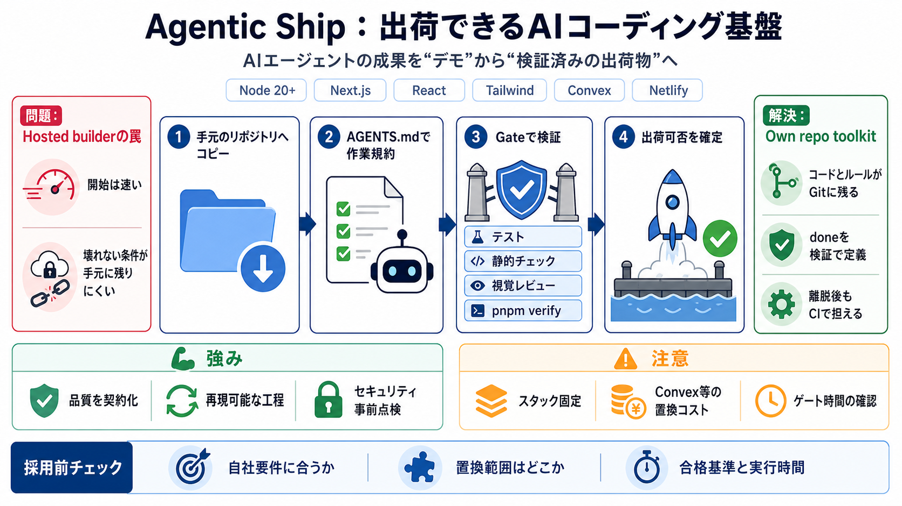

Vercel vs Supabase (2026): Features, Pricing, and Key Differences | UI Bakery Blog
March 10, 2026 Vercel and Supabase are often compared when developers are building modern full-stack applications, but …

立ち上げは簡単だが、運用の契約が外部化されがち
“できた”は残っても、“壊れない条件”が残らない
AGENTS.mdのルールを守る
テスト・静的チェック・視覚レビュー等で合否
runtime/フレームワーク
Convex + 認証/課金/メール
Netlify主導のデプロイ
リポジトリへコピー
AGENTS.mdで作業規約
pnpm verify等で合否判定
出荷可否を“検証で”確定
Vitest
Playwright
静的チェック + pnpm verify
外部の規約・検証に依存しやすい
コードと検証ゲートが自分のGitに残る
production preflight（本番前点検）
依存監査 + 設定の整合
誰が何に同意したかを前提化
接続を取り消せる前提で構成
pnpm verify + テスト/レビューで品質を契約化
Convex等への依存が増え、スワップ見積が必要
自社要件の適合
置換コスト（どこが大きいか）
ゲートの合否基準と時間
March 10, 2026 Vercel and Supabase are often compared when developers are building modern full-stack applications, but …
13.4k Self-hostCloud Self-host Self-hostCloud Cloud # Convex vs Supabase: Which Backend Platform Should You Choose?…
Netlify functions are slower to cold start than Vercel or Cloudflare Workers. For latency-sensitive operations, consider…
### 3. Observability and Developer Experience (DX) Vercel has a strong UI, preview environments, and detailed build/dep…
Vercel detects Next.js on import and requires no configuration file, adapter, or build settings. An optional `vercel.jso…